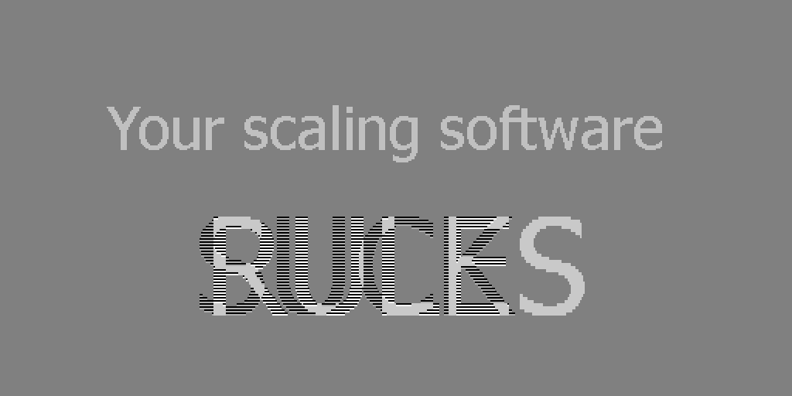

WARNING: This page will only look right on a screen with a 2x scale factor, such as on all recent Macs.
Here's an image (credit: Jonas Berlin, source).
It's displayed by using the same image file for both the
(That's not how (It uses a hack to force it to be displayed at 1:1 pixel scale.)
1x and
2x variants, like so:
<img srcset="gamma-1.0-or-2.2.png 1x, gamma-1.0-or-2.2.png 2x"
src="http://www.ericbrasseur.org/gamma-1.0-or-2.2.png" />
srcset is supposed to be used! Normally, you'd use
an image of twice the resolution for the 2x image. We use it as a
hack here to make sure that browsers don't scale up the image on retina
screens.)
Here's the same image scaled up 2x, using software that does gamma-correct image upsampling. It also uses the hack mentioned above to show it at 1x zoom on retina screens:

I used imageworsener,
with this command:
This tells imageworsener to use a bilinear filter. It uses gamma-correct
resampling by default. If you also pass How I made the gamma-correctly upsampled image
./imagew -filter triangle -w 1024 -h 512 gamma-1.0-or-2.2.png out.png
-nogamma, you will get
the behavior that browsers currently get you, see below.
Here's the image how your browser displays it when just using
<img src="gamma-1.0-or-2.2.png" /> (i.e. how it
displays most images on the web):
At the time of this writing (Oct 2025), none of the major browsers does gamma-correct image resizing when upsampling images -- despite that being how the majority of the images on the web are displayed.
This is why articles about dithering that bother to deal with gamma correction tend to include a disclaimer along the lines "trust me, this is really better, even though it looks worse in your browser": The browser gamma-incorrectly upsamples the source and dithered images, and if you do gamma-incorecct dithering, the errors cancel out!
A while ago, Eric Brasseur did a detailed write-up on gamma-correct image sampling. It explains what gamma-correct image resampling is. It focused on downsampling. It looks like all browsers fixed their downsampling in response, but upsampling still has the same problem.